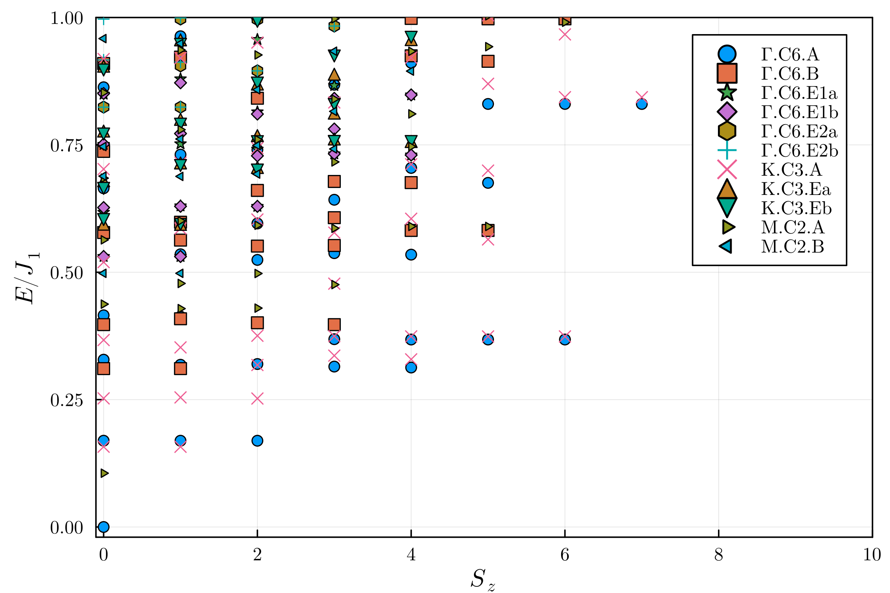

Extended kagome lattice antiferromagnet
Author Siddhartha Sarkar
We consider kagome lattice with the following Hamiltonian
where \(\boldsymbol{S}_i\) are spin \(1/2\) operators, \(\langle \dots \rangle\) and \(\langle\langle \dots \rangle\rangle\) denote sum over nearest and next-nearest neighbor sites, and \(\langle \langle\langle\dots\rangle\rangle\rangle_h\) denote sum over third-nearest-neighbor sites [2]. This model host plethora of interesting phases for different parameter regimes. Here we we will be interested in the parameter values \(J_2/J_1 =-1.0\) and \(J_3/J_1=-2.0\), for which it was predicted in [2] that the ground state has spin-nematic character, of quadrupolar type. Tower of state analysis [1] provides a strong evidence for this type of spontaneous symmetry breaking (SSB) in the thermodynamic limit, as the ground state of a finite system is completely symmetric. The spectrum of this model can be labeled by total magnetization since \([\mathcal{H},S_z]=0\) (in fact the Hamiltonian is \(SU(2)\), and hence the spectrum can be labeled by \(S^2\) and \(S_z\); but for obtaining the eigen-spectrum, we only use \(S_z\)).
To perform the TOS analysis, we converged the lowest-lying eigenvalues using the Lanczos algorithm in each symmetry sector (labeled by \(S_z\), momentum, and little group irreducible representations at each momentum) for a \(C_6\) symmetric system with \(N=36\) sites (\(12\) unit cells and \(3\) spins per unit cell). The \(36\)-site kagome lattice and the momentum points in the Brillouin zone are shown in the figure below.
In the left figure above, the twelve triangles show the 12 unit cells. In the right figure above, the different momentum points are shown; there are three \(M\) points (related by \(C_3\) with each other), two \(K\) points (related by \(C_2\)), six \(Z\) points (related by \(C_6\)), and one \(\Gamma\) point. We plot the spectrum vs \(S_z\) in the figure below.

The momenta and the irrep labels of the eigenstates are shown with markers. The degeneracies at different \(S_z\) gives total quantum of number \(S\). Odd-\(S\) sectors are not present in the low-energy tower of states, indicating a quadrupolar spin-nematic phase [2].
The C++ script used to obtain the eigen spectra is given below
The interactions terms and the symmetry representation inputs are given in the following TOML file:
To run the above C++ code with the toml file, one needs to execute the following command
where the n_sites, n_up, kname, J1, and seed are to be replaced by their values such as 32, 16, Gamma.C6.A, 1.00, -1.00, -2.00, 1, respectively. The Julia code below was used to generate the plot above from the data obtaining running the above code.Plotting Script
using LinearAlgebra
using Plots
using Combinatorics
# using BenchmarkTools
using Kronecker
using LaTeXStrings
using Arpack
# using KernelDensity
using Interpolations
using SparseArrays
# using ArnoldiMethod
using KrylovKit
using JLD2
using HDF5
using Printf
plot_font = "Computer Modern"
default(
fontfamily=plot_font,
linewidth=2,
framestyle=:box,
# xtickfont=font(18),
label=nothing,
left_margin=8Plots.mm,
bottom_margin=2Plots.mm
# ytickfont=font(18),
# legendfont=font(18)
)
colors = palette(:default)#palette(:thermal,length(14:div(n_sites,2))+1)
markers = filter((m->begin
m in Plots.supported_markers()
end), Plots._shape_keys)
n_sites=36
n_seeds = 1
ks=["Gamma.C6.A", "Gamma.C6.B", "Gamma.C6.E1a", "Gamma.C6.E1b", "Gamma.C6.E2a", "Gamma.C6.E2b", "K.C3.A", "K.C3.Ea", "K.C3.Eb", "M.C2.A", "M.C2.B"]#, "Z.C1.A", "Delta.C1.A", "Sigma.C1.A", "Z0.C1.A", "Z1.C1.A"]
ksl=["Γ.C6.A", "Γ.C6.B", "Γ.C6.E1a", "Γ.C6.E1b", "Γ.C6.E2a", "Γ.C6.E2b", "K.C3.A", "K.C3.Ea", "K.C3.Eb", "M.C2.A", "M.C2.B"]
seeds = [i for i=1:n_seeds]
nup_start=10
n_ups = [i for i=nup_start:(div(n_sites,2))]#
J1=1.00
J2=-1.0
J3=-2.0
n_eigs = 10
for seed in seeds
plot(xlabel=L"S_z",ylabel=L"E/J_1",ylims=(-0.02,1),xlims=(-0.1,10),dpi=400,xticks=(0:2:10,[string(i) for i=0:2:10]))
mineig = 0
eigvs = []
Sz = []
f = h5open(@sprintf("outfile.kagome.%d.J1.%.2f.J2.%.2f.J3.%.2f.nup.%d.k.%s.seed.%d.h5",n_sites,J1,J2,J3,div(n_sites,2),"Gamma.C6.A",seed), "r")
mineig = read(f["Eigenvalues"])[1]
for n_up=n_ups
c=0
for k in ks
c=c+1
f = h5open(@sprintf("outfile.kagome.%d.J1.%.2f.J2.%.2f.J3.%.2f.nup.%d.k.%s.seed.%d.h5",n_sites,J1,J2,J3,n_up,k,seed), "r")
eig = read(f["Eigenvalues"])[1:n_eigs].-mineig
sz=abs(n_up- n_sites / 2)*[1 for i=1:n_eigs]
if n_up==nup_start
plot!(sz,eig,seriestype=:scatter,m=markers[c],mc=colors[c],label=ksl[c])
else
plot!(sz,eig,seriestype=:scatter,m=markers[c],mc=colors[c],primary=false)
end
close(f)
end
end
savefig(@sprintf("outfile.kagome.%d.J1.%.2f.J2.%.2f.J3.%.2f.seed.%d-n.png",n_sites,J1,J2,J3,seed))
end
references
[1] P. W. Anderson, An Approximate Quantum Theory of the Antiferromagnetic Ground State, Phys. Rev. 86, 694 (1952)
[2] Wietek, Alexander, and Andreas M. Läuchli. "Valence bond solid and possible deconfined quantum criticality in an extended kagome lattice Heisenberg antiferromagnet." Physical Review B 102.2 (2020): 020411